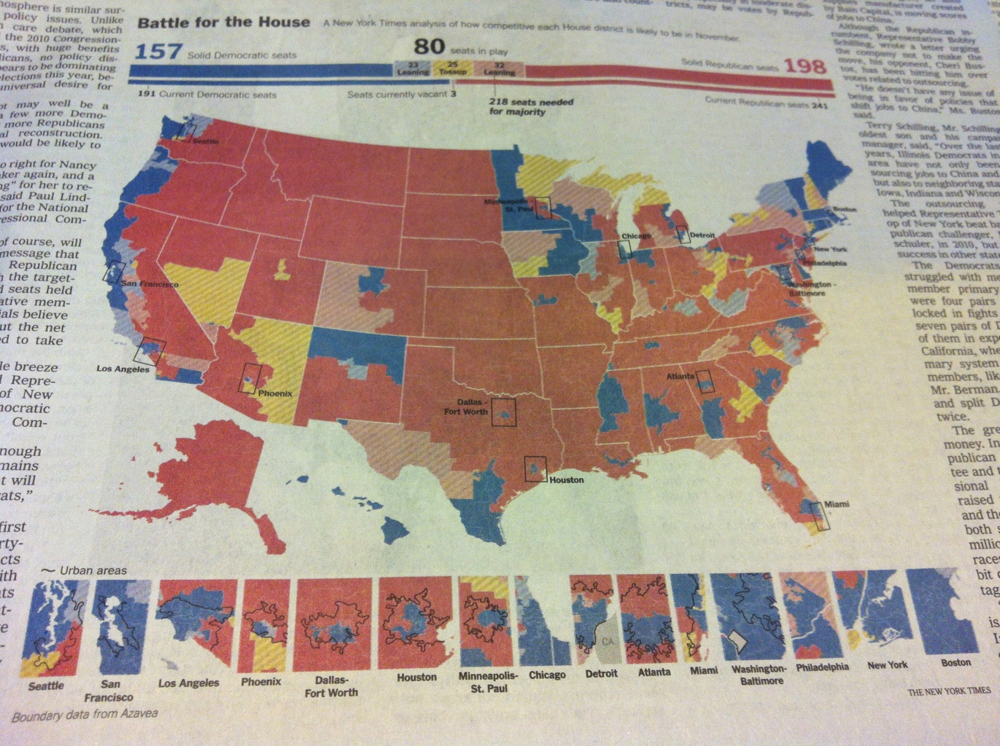

Do you recognize this map?
July 26, 2012
Do you?

New York Times map of House districts
It looks eerily familiar to this map. Which looks eerily familiar to these maps. Which were published weeks ago.
Which means the map we see in print sprouted from an online graphic.
Not the other way around.